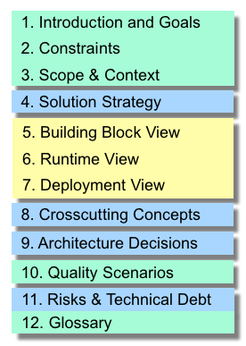

Open source · 12 languages · since 2005
The proven, pragmatic template to construct, communicate and document software architecture. Free and open source.
arc42 answers two questions in a pragmatic way: what should you document and communicate about your architecture, and how.
It is based on practical experience with many systems across domains: information and web systems, real-time and embedded, business intelligence and data warehouses. Twelve sections, each with a clear purpose, tailorable to your specific needs.
arc42 supports arbitrary technologies and tools, nothing to install. It is process-agnostic and especially well suited to lean and agile teams. Open source and free of charge, in commercial and private settings.

Every section has a clear purpose and links straight to its detailed documentation on docs.arc42.org. Hover a row to preview its structure.


arc42 is also an opinionated method for developing and evolving software architecture: six recurring, interrelated activities, held together by constant learning and continuous feedback.
The template answers where architecture information belongs; the method answers how you work to produce it. It keeps your architecture, your code and your stakeholders in sync, in agile, lean or formal projects alike.

arc42 was created by Dr. Gernot Starke and Dr. Peter Hruschka and has been refined in real projects for more than twenty years. They still maintain it, teach it in iSAQB-certified architecture trainings, and write about it.
There is plenty to learn from: browse our books, articles, talks and videos →